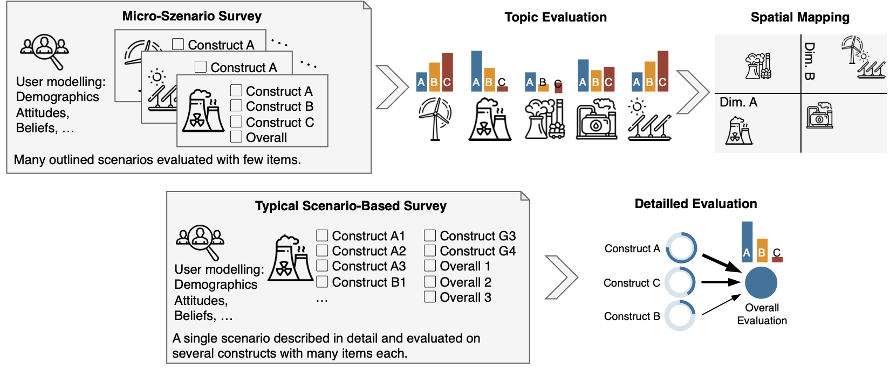

![]()
Introduction
The goal of the micro scenario approach is to gather the evaluation of a wide range of topics on few selected response variables and put the different evaluation into context. Hereto, the subjects are presented with a large number of different short scenarios and their evaluation of these is measured using a small set of response variables. The scenario presentation can be a short descriptive text, and/or images, or, in extreme cases, just a single word about an evaluated concept. We call the former “micro scenarios” and the latter “nano scenarios”. The former offers the possibility to briefly explain the evaluated topic whereas the later essentially measures the participants’ affective associations towards a single term.

Each scenario is evaluated on a the same small set of response items (see Figure 1). As many scenarios are evaluated by the participants, we suggest to use no more than three to five items. With a suitable set of dependent variables, the evaluations offer two different research perspectives: As the first research perspective, they can be understood, as user variables (individual differences between the participants) and correlations between age, gender, or other user factors can be investigated. As the second research perspective, the evaluations serve as topic evaluations and relationships between the evaluation dimensions across the different topics can be studied (differences and communalities between the queried topics). For example, one can explore the relationship between the perceived risk and the perceived utility for a range of different topics or technologies.
We illustrate how studies using the micro scenario approach can be analysed and visualized and further we created a page that create synthetic data for illustrating the analysis.
Details on this approach, a methodological justification, and practical guidelines can be found in the following article:
Visual Cognitive Mapping: Assessing Social Acceptance of Emerging Technologies through Micro Scenarios, Philipp Brauner & Julia Offermann (2024)
List of Studies
Several studies based on this approach have been published or are in the making. We document them here, including the research context, sample size, number of topics queried, and dependent variables. If you use this approach, let us know and we can add your study as well.
| Publication | #Topics | Dependents | N |
|---|---|---|---|
| Brauner P, Hick A, Philipsen R and Ziefle M (2023) What does the public think about artificial intelligence? - A criticality map to understand bias in the public perception of AI. Front. Comput. Sci. 5:1113903. doi: 10.3389/fcomp.2023.1113903 | 34 | Expectancy, Valence | 122 |
Acknowledgements:
This approach evolved over time and through several research projects.
I would like to thank all those who have directly or indirectly, consciously or unconsciously, inspired me to take a closer look at this approach and who have given me the opportunity to apply this approach in various contexts. In particular, I would like to thank:
Julia Offermann, for indispensable discussions about this approach and so much encouragement and constructive comments during the last meters of the manuscript.
Ralf Philipsen, without whom the very first study with that approach would never have happened, as we developed the crazy idea to explore the benefits of barriers of using questions in Limesurvey.
Martina Ziefle for igniting scientific curiosity and motivating me to embark on a journey of boundless creativity and exploration.
Felix Glawe, Luca Liehner, and Luisa Vervier for working on a study that took this concept to another level.
Julian Hildebrandt for in-depth discussions on the approach and for validating the accompanying code.
Tim Schmeckel for feedback on the draft of this article.
Throughout the process I received feedback from reviewers that helped to question this approach and improve the foundation of this approach.
No scientific method of the social sciences alone will fully answer all of our questions.
We hope that this method provides a fresh perspective on exciting and relevant questions.
Funded by the Deutsche Forschungsgemeinschaft (DFG, German Research Foundation) under Germany’s Excellence Strategy – EXC- 2023 Internet of Production – 390621612.